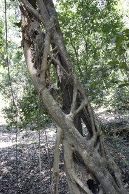
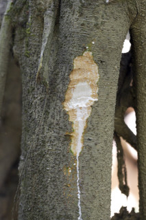
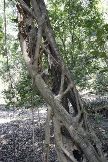
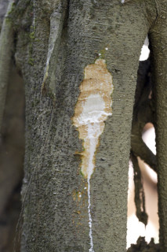
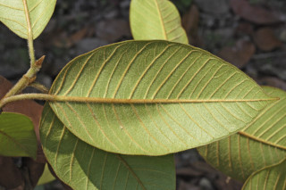
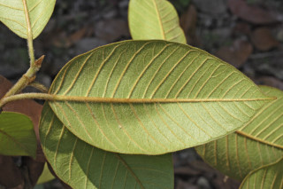
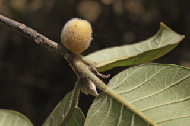
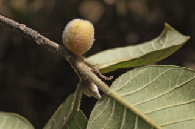

Trees up to 25 m tall, aerial roots numerous, arising in tufts from the stout branches.
ದಪ್ಪವಾದ ಕೊಂಬೆಗಳಿಂದ ಕುಚ್ಚಗಳ ತರಹ ಹೊಮ್ಮುವ ಅಸಂಖ್ಯ ಬಿಳಲು ಬೇರುಗಳನ್ನೊಳಗೊಂಡ 25 ಮೀ. ಎತ್ತರದವರೆಗಿನ ಮರಗಳು.
Trees up to 25 m tall, aerial roots numerous, arising in tufts from the stout branches.
மரங்கள் 25 மீ. உயரம் வரை வளரக்கூடியது, எண்ணற்ற தொங்கு வேர்களுடையவை, தடித்த கிளைகளில் கொத்தாக தோன்றக்கூடியவை
Bark greyish, lenticellate; blaze cream.
ತೊಗಟೆ ಬೂದು ಬಣ್ಣದಲ್ಲಿದ್ದು ಸೂಕ್ಷ್ಮ ವಾಯು ವಿನಿಮಯ ಬೆಂಡು ರಂಧ್ರಗಳ ಸಮೇತವಿರುತ್ತದೆ; ಕಚ್ಚು ಮಾಡಿದ ಜಾಗ ಕೆನೆ ಬಣ್ಣದಲ್ಲಿರುತ್ತದೆ.
Bark greyish, lenticellate; blaze cream.
மரத்தின் பட்டை சாம்பல் நிறமானது, பட்டைத்துளைகள் (லெண்டிசெல்லேட்) உடையது; உள்பட்டை கிரீம் நிறமானது.
Young branchlets terete (rugose when dry), brown pubescent.
ಕಿರುಕೊಂಬೆಗಳು ದುಂಡಾಗಿದ್ದು (ಒಣಗಿದಾಗ ಸುಕ್ಕುಆಗಿರುತ್ತದೆ) ಕಂದು ಬಣ್ಣದ ಮೃದುತುಪ್ಪಳವನ್ನು ಹೊಂದಿರುತ್ತವೆ.
Young branchlets terete (rugose when dry), brown pubescent.
சிறியநுனிக்கிளைகள் குறுக்குவெட்டுத் தோற்றத்தில் வளையமானது ( உலரும் போது சுருக்கங்களுடையவை (ருக்கோஸ்)), ப்ரவுன் நிறமான உரோமங்களுடையது.
Latex white, profuse.
ಜಿನುಗು ದ್ರವ ಬಿಳಿ ಬಣ್ಣದಲ್ಲಿದ್ದು ವಿಫುಲವಾಗಿರುತ್ತದೆ.
Latex white, profuse.
வெள்ளை நிற பால் அதிகளவு சுரக்கிறது
Leaves simple, alternate, spiral; stipules 1 cm long, pubescent, caducous leaving annular scar; petiole to 1.5-3.5 cm long, planoconvex in cross section, pubescent; lamina 10-22 x 6-15 cm, broadly elliptic-oblong or ovate, apex acute or acuminate, base rounded or subcordate, margin entire, brown pubescent beneath when young, later glabrescent; midrib raised above; secondary_nerves 8-12 pairs, prominent; tertiary_nerves broadly reticulate.
ಎಲೆಗಳು ಸರಳವಾಗಿದ್ದುಪರ್ಯಾಯ ಮತ್ತು ಸುತ್ತು ಜೋಡನಾ ವ್ಯವಸ್ಥೆಯಲ್ಲಿರುತ್ತವೆ; ಕಾವಿನೆಲೆಗಳು 1 ಸೆಂ.ಮೀ.ವರೆಗಿನ ಉದ್ದವಿದ್ದು ಮೃದುತುಪ್ಪಳದಿಂದ ಕೂಡಿರುತ್ತವೆ ಮತ್ತು ವಲಯಾಕಾರದ ಗುರುತುಗಳನ್ನುಳಿಸಿ ಉದುರಿ ಹೋಗುತ್ತವೆ;ತೊಟ್ಟುಗಳು 1.5 – 3.5 ಸೆಂ.ಮೀ. ಉದ್ದ ಹೊಂದಿದ್ದು ಮೃದು ತುಪ್ಪಳ ದಿಂದ ಕೂಡಿರುತ್ತವೆ ಮತ್ತು ಅಡ್ಡ ಸೀಳಿದಾಗ ಸಪಾಟ ಪೀನ ಮಧ್ಯದ ಆಕಾದಲ್ಲಿರುತ್ತವೆ;ಪತ್ರಗಳು 10 – 22 X 6 – 15 ಸೆಂ.ಮೀ. ಗಾತ್ರವಿದ್ದು ವಿಶಾಲ ಅಂಡವೃತ್ತ – ಚತುರಸ್ರ ಅಥವಾ ಅಂಡದ ಆಕಾರ ಹೊಂದಿದ್ದು, ಚೂಪಾದ ಅಥವಾ ಕ್ರಮೇಣ ಚೂಪಾಗುವ ತುದಿ, ದುಂಡಾದ ಅಥವಾ ಉಪ-ಹೃದಯಾಕಾರದ ಬುಡ, ನಯವಾದ ಅಂಚು ಹೊಂದಿರುತ್ತವೆ, ಪತ್ರಗಳು ಎಳೆಯದಾಗಿದ್ದಾಗ ಕಂದು ಬಣ್ಣದ ಮೃದು ತುಪ್ಪಳವುಳ್ಳ ತಳ ಭಾಗ ಹೊಂದಿದ್ದು ನಂತರ ಉದುರಿಹೋಗುತ್ತವೆ,ಪತ್ರಗಳು ಬುಡದಲ್ಲಿ 3 ರಿಂದ 5 ಆಧಾರ ನಾಳಗಳನ್ನುಹೊಂದಿರುತ್ತವೆ; ಮಧ್ಯ ನಾಳ ಮೇಲ್ಭಾಗದಲ್ಲಿ ಮೇಲೆದ್ದಿರುತ್ತದೆ; ಎರಡನೇ ದರ್ಜೆಯ ನಾಳಗಳು 8-12 ಜೋಡಿಗಳಿದ್ದು ಪ್ರಮುಖವಾಗಿರುತ್ತವೆ;ಮೂರನೇ ದರ್ಜೆಯ ನಾಳಗಳು ವಿಶಾಲ ಜಾಲ ಬಂಧ ನಾಳ ವಿನ್ಯಾಸದಲ್ಲಿರುತ್ತವೆ.
Leaves simple, alternate, spiral; stipules 1 cm long, pubescent, caducous leaving annular scar; petiole to 1.5-3.5 cm long, planoconvex in cross section, pubescent; lamina 10-22 x 6-15 cm, broadly elliptic-oblong or ovate, apex acute or acuminate, base rounded or subcordate, margin entire, brown pubescent beneath when young, later glabrescent; midrib raised above; secondary_nerves 8-12 pairs, prominent; tertiary_nerves broadly reticulate.
இலைகள் தனித்தவை, மாற்றுஅடுக்கமானவை, சுழல் போன்று அமைந்தவை; இலையடிச்செதில் 1 செ.மீ. நீளமானது, உரோமங்களுடையது, எளிதில் உதிரக்கூடியது மற்றும் வட்டவடுக்களை ஏற்படுத்துகின்றன; இலைக்காம்பு 1.5-3.5 செ.மீ. நீளமானது, இலைக்காம்பு குறுக்குவெட்டுத் தோற்றத்தில் பிளேனோகான்வக்ஸ், உரோமங்களுடையது; இலை அலகு 10-22 x 6-15 செ.மீ., அகன்ற நீள்வட்ட-நீள்சதுர வடிவானது அல்லது முட்டை வடிவானது, அலகின் நுனி கூரியது அல்லது அதிக்கூரியது, அலகின் தளம் வட்டமானது அல்லது சிறிய இதய வடிவானது, அலகின் விளிம்பு முழுமையானது, இளம்பருவத்தில் ப்ரவுன் நிறமான உரோமங்களுடையது, முதிரும் போது நுண்ணிய உரோமங்களுடையது அல்லது உரோமங்களற்றது; மையநரம்பு மேற்புறத்தில் அலகின் பரப்பைவிட உயர்ந்து இருக்கும்; இரண்டாம் நிலை நரம்புகள் 8-12 ஜோடிகள், தெளிவானது; மூன்றாம் நிலை நரம்புகள் அகன்ற வலைப்பின்னல் போன்றவை.
Inflorescence syconia, axillary, solitary, subglobose, sessile, brown pubescent; flowers unisexual.
ಪುಷ್ಪಮಂಜರಿಗಳು ಸೈಕೋನಿಯ ರೀತಿಯವುಗಳಾಗಿದ್ದುಅಕ್ಷಾಕಂಕುಳಿನಲ್ಲಿ ಒಂಟಿಯಾಗಿರುತ್ತವೆ ಮತ್ತು ಉಪ-ಗೋಳಾಕಾರದಲ್ಲಿದ್ದು ಸಣ್ಣದಾದ ತೊಟ್ಟುಗಳನ್ನು ಹೊಂದಿರುತ್ತವೆ ಮತ್ತು ಕಂದು ಬಣ್ಣದ ಮೃದುತುಪ್ಪಳದಿಂದ ಕೂಡಿರುತ್ತವೆ; ಹೂಗಳು ಏಕ ಲಿಂಗಿಗಳು.
Inflorescence syconia, axillary, solitary, subglobose, sessile, brown pubescent; flowers unisexual.
மஞ்சரி சைகோனியம், இலைக்கோணங்களில் காணப்படுபவை, தனித்தவை, கோளவடிவானது, காம்பற்றது, ப்ரவுன் நிறமான உரோமங்களுடையது; மலர்கள் ஓர் பாலானவை.
Syconium, sessile, oblong or obovate, ca. 2.5 cm long, orange yellow when ripe, pubescent; achene smooth.
ಸೈಕೋನಿಯ (ಸಂಯುಕ್ತ ಫಲ) ತೊಟ್ಟುರಹಿತವಾಗಿದ್ದು ಚತುರಸ್ರ ಅಥವಾ ಬುಗುರಿ ಆಕಾರದಲ್ಲಿದ್ದು ಅಂದಾಜು 2..5 ಸೆಂ.ಮೀ. ಅಡ್ಡಗಲತೆಯನ್ನು ಹೊಂದಿರುತ್ತವೆ ,ಕಳಿತಾಗ ಕಿತ್ತಳೆ ಮಿಶ್ರಿತ ಹಳದಿ ಬಣ್ಣದಲ್ಲಿರುತ್ತವೆ ;ಅಖೀನುಗಳು ನಯವಾಗಿರುತ್ತವೆ.
Syconium, sessile, oblong or obovate, ca. 2.5 cm long, orange yellow when ripe, pubescent; achene smooth.
சைகோனியம், காம்பற்றது, நீள்சதுர வடிவானது அல்லது தலைகீழ் முட்டை வடிவானது, 2.5 செ.மீ. நீளமானது, கனியும் போது ஆரஞ்ச்-மஞ்சள் நிறமானவை, உரோமங்களுடையது; சிற்றுலர்கனி (அக்கீன்) வழவழப்பானது.

 





 



 
